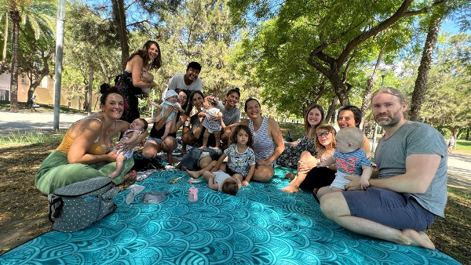

Nadons en família és un espai de trobada i d'acompanyament adreçat a mares i/o famílies que acaben de tenir un nadó.
Tot i que és un programa municipal d'àmbit ciutat, al barri de La Barceloneta té un caràcter innovador; i és doble: per una banda és una demanda històrica que sorgeix des de la pròpia comunitat, i és des d’aquí des d’on s’impulsa, i per l'altra, incorpora la vessant comunitària, que es suma a la vessant de la salut i de l'educació, amb la finalitat de promoure l’ajuda mútua entre les famílies del barri evitant l’aïllament en un període vital de certa complexitat, així com per reforçar l’arrelament i el teixit social del barri. Alhora aquest espai comunitari pretén ser un altaveu per visibilitzar la criança conscient, fomentar la cohesió entre famílies amb petita infància i posar en valor les cures (treball reproductiu).
A qui va dirigit?
Aquest espai està centrat preferentment en les dones que han estat mares, podent participar amb la seva criatura des de les darreres setmanes de la gestació fins als primers 8/9 mesos de vida de l'infant.
Quan es porta a terme?
Les sessions es fan un cop per setmana (matins) i tenen una duració de 2h.
On es porta a terme?
Equipament infantil i CAP Barceloneta.
Qui fa l'acompanyament de l'espai?
L'equip de facilitadores de l'espai l'integra una professional de l'Institut d'Educació de Barcelona, una professional del CAP Barceloneta i una treballadora comunitària del PDC.